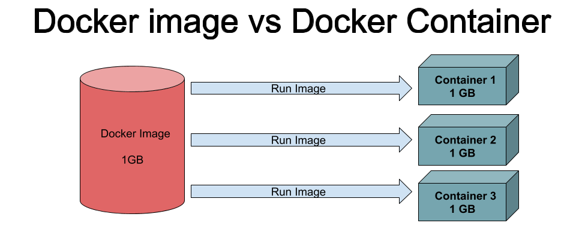

Last updated: 2019-12-05
Checks: 7 0
Knit directory: reproducible_bioinformatics/
This reproducible R Markdown analysis was created with workflowr (version 1.5.0). The Checks tab describes the reproducibility checks that were applied when the results were created. The Past versions tab lists the development history.
Great! Since the R Markdown file has been committed to the Git repository, you know the exact version of the code that produced these results.
Great job! The global environment was empty. Objects defined in the global environment can affect the analysis in your R Markdown file in unknown ways. For reproduciblity it’s best to always run the code in an empty environment.
The command set.seed(20191203) was run prior to running the code in the R Markdown file. Setting a seed ensures that any results that rely on randomness, e.g. subsampling or permutations, are reproducible.
Great job! Recording the operating system, R version, and package versions is critical for reproducibility.
Nice! There were no cached chunks for this analysis, so you can be confident that you successfully produced the results during this run.
Great job! Using relative paths to the files within your workflowr project makes it easier to run your code on other machines.
Great! You are using Git for version control. Tracking code development and connecting the code version to the results is critical for reproducibility. The version displayed above was the version of the Git repository at the time these results were generated.
Note that you need to be careful to ensure that all relevant files for the analysis have been committed to Git prior to generating the results (you can use wflow_publish or wflow_git_commit). workflowr only checks the R Markdown file, but you know if there are other scripts or data files that it depends on. Below is the status of the Git repository when the results were generated:
Ignored files:
Ignored: .Rhistory
Untracked files:
Untracked: data/aln_consensus.bcf
Unstaged changes:
Modified: analysis/_site.yml
Modified: data/README.md
Note that any generated files, e.g. HTML, png, CSS, etc., are not included in this status report because it is ok for generated content to have uncommitted changes.
These are the previous versions of the R Markdown and HTML files. If you’ve configured a remote Git repository (see ?wflow_git_remote), click on the hyperlinks in the table below to view them.
| File | Version | Author | Date | Message |
|---|---|---|---|---|
| Rmd | 179c2bb | davetang | 2019-12-05 | wflow_publish(files = c(“analysis/conda.Rmd”, “analysis/docker.Rmd”, “analysis/index.Rmd”, |
| html | 9aa9aa4 | davetang | 2019-12-05 | Build site. |
| Rmd | ec7204f | davetang | 2019-12-05 | wflow_publish(files = c(“analysis/about.Rmd”, “analysis/conda.Rmd”, “analysis/docker.Rmd”, |
| html | 2f6c2fd | Dave Tang | 2019-12-05 | Build site. |
| Rmd | f19271d | Dave Tang | 2019-12-05 | wflow_publish(files = c(“analysis/docker.Rmd”, “analysis/index.Rmd”)) |
This tutorial was adopted from here and here. The output shown is based on running the commands on my MacBook Pro (15-inch, 2017) using Docker version 19.03.5.
To follow this tutorial, make sure you have Docker installed. This tutorial is aimed at beginners with no prior experience with Docker and participants are expected to launch Docker images on their local machines, mount volumes, and set ports as needed to use RStudio Server.
Docker is a platform that uses OS-level virtualisation to deliver software in packages called containers, which are completely isolated environments. They can have their own processes or services or network interfaces, volume mounts, just like a virtual machine (VM). They differ from VM’s only in a single aspect, they “share” the OS kernel. A Docker image is a static (fixed) template and container is a running version of the image.

Containers make it easy to ship tools (useful for developers) and use tools on your local system (useful for users). A container encapsulates a software component and its corresponding dependencies so you can simply install software by downloading the image and run it on any system that supports Docker. Many bioinformatics tools have been containerised by the BioContainers initiative; they have over 1,000 repositories on Docker Hub containing Docker images of various bioinformatic tools. You simply have to pull these images onto your computer to start using it instead of installing software natively on your computer.
First ensure that you have Docker installed.
docker --version
Docker version 19.03.5, build 633a0eaObligatory step.
docker run hello-world
Hello from Docker!
This message shows that your installation appears to be working correctly.
To generate this message, Docker took the following steps:
1. The Docker client contacted the Docker daemon.
2. The Docker daemon pulled the "hello-world" image from the Docker Hub.
(amd64)
3. The Docker daemon created a new container from that image which runs the
executable that produces the output you are currently reading.
4. The Docker daemon streamed that output to the Docker client, which sent it
to your terminal.
To try something more ambitious, you can run an Ubuntu container with:
$ docker run -it ubuntu bash
Share images, automate workflows, and more with a free Docker ID:
https://hub.docker.com/
For more examples and ideas, visit:
https://docs.docker.com/engine/userguide/The docker pull command retrieves the latest version of the docker image from the Docker Hub. We will pull a software suite called BusyBox, which combines tiny versions of many common UNIX utilities into a single small executable.
docker pull busyboxThe docker images command shows you all the docker images that you have available on your local machine.
docker images
REPOSITORY TAG IMAGE ID CREATED SIZE
busybox latest b534869c81f0 17 hours ago 1.22MBThe docker run command starts a new docker container using a docker image. A docker image is a filesystem and parameters to use at runtime. It doesn’t have state and never changes. A docker container is a running instance of an image.
docker run -it --rm busyboxThe -i flag specifies that you want to run the docker container interactively. The -t flag specifies that you want run a pseudoterminal when the container is started. The --rm flag automatically remove the container when it exits.
Type exit on the command line to leave the docker container.
/ # exitRemove the busybox image.
docker rmi busybox
# busybox should now be gone
docker imagesThe Rocker project provides various Docker images for the R environment. Here we use a RStudio Server image that I have prepared for this workshop.
docker pull davetang/rstudio_biocasiaOnce you have successfully pulled the image, try running the command below. The output indicates that the image is using the Debian operating system.
docker run --rm -it davetang/rstudio_biocasia cat /etc/os-release
PRETTY_NAME="Debian GNU/Linux 9 (stretch)"
NAME="Debian GNU/Linux"
VERSION_ID="9"
VERSION="9 (stretch)"
VERSION_CODENAME=stretch
ID=debian
HOME_URL="https://www.debian.org/"
SUPPORT_URL="https://www.debian.org/support"
BUG_REPORT_URL="https://bugs.debian.org/"Run davetang/rstudio_biocasia to start a container.
docker run --rm \
-p 8888:8787 \
-e PASSWORD=password \
davetang/rstudio_biocasiaIf all went well, you can access the RStudio Server at http://localhost:8888/ via your favourite web browser. The username is rstudio and the password is password. The flag ‘-p’ is the port and ‘-e’ is the environment variable; RStudio Server uses port 8787 by default by I have mapped this to port 8888 on my local machine. You can run several containers of RStudio Server if you use different ports.
If you open up a new terminal, you can use ps to see that your container is running.
docker ps
CONTAINER ID IMAGE COMMAND CREATED STATUS PORTS NAMES
4c2d23d61039 davetang/rstudio_biocasia "/init" 4 seconds ago Up 3 seconds 0.0.0.0:8888->8787/tcp angry_wingUse “Control+C” to terminate the container.
I have pre-installed several R packages in davetang/rstudio_biocasia but the base image from Rocker only comes with base packages. We can mount a directory on our local filesystem to the Docker container and use that to store all our installed packages, so we don’t have to re-install packages each time we start the container.
docker run --rm \
-p 8888:8787 \
-v /tmp/packages/:/packages \
-e PASSWORD=password \
davetang/rstudio_biocasiaGo to http://localhost:8888/ via your favourite web browser just like before with the username rstudio and password password. Once you have logged in, use .libPaths to add a new library path.
# add a new library path
.libPaths(new = "/packages")
.libPaths()
[1] "/packages" "/usr/local/lib/R/site-library" "/usr/local/lib/R/library"Newly installed packages will be installed in /packages inside the container, which is linked to /tmp/packages on your local machine.
install.packages("pheatmap")
Installing package into ‘/packages’
(as ‘lib’ is unspecified)
trying URL 'https://mran.microsoft.com/snapshot/2019-07-31/src/contrib/pheatmap_1.0.12.tar.gz'
Content type 'application/octet-stream' length 15071 bytes (14 KB)
==================================================
downloaded 14 KB
* installing *source* package ‘pheatmap’ ...
** package ‘pheatmap’ successfully unpacked and MD5 sums checked
** using staged installation
** R
** byte-compile and prepare package for lazy loading
** help
*** installing help indices
** building package indices
** testing if installed package can be loaded from temporary location
** testing if installed package can be loaded from final location
** testing if installed package keeps a record of temporary installation path
* DONE (pheatmap)
The downloaded source packages are in
‘/tmp/RtmpQ7rBy5/downloaded_packages’The next time you run RStudio Server, you just need to add the packages directory. All the packages in that directory will be directly available to use instantly the next time RStudio is started from the container. Another big advantage is that it prevents your Docker image from growing in size due to package installation and data. This allows the users to distribute smaller Docker images containing only what is needed.
.libPaths(new = "/packages")
library(pheatmap)Use “Control+C” to terminate the container.
You can mount as many volumes as needed with the -v/–volume command. For example you can mount a package, notebooks, and data volume to save your work on your local machine.
docker run --rm \
-p 8888:8787 \
-v /tmp/packages:/packages \
-v /tmp/notebooks:/notebooks \
-v /tmp/data:/data \
-e PASSWORD=password \
davetang/rstudio_biocasiaI have some specific preferences for RStudio Server that are absolutely necessary, such as using Vim key bindings. These preferences are set via the Tools menu bar and then selecting Global Options.... Each time we start a new container, we will lose our preferences and I don’t want to manually change them each time. Luckily, the settings are saved in a specific file, which we can use to save our settings; the user-settings file is stored in the location below:
/home/rstudio/.rstudio/monitored/user-settings/user-settingsOnce you have made all your settings, save this file back to your local computer and use it to rewrite the default file next time you start a new instance. For example:
# once you have the container running in the background, log into Docker container
# I have mounted this directory to /data
cp /data/user-settings /home/rstudio/.rstudio/monitored/user-settings/user-settingsNow you can have persistent RStudio Server preferences!
Docker images are built based on commands contained in a Dockerfile. For example below is the Dockerfile I used to create the davetang/rstudio_biocasia image.
FROM rocker/rstudio:3.6.1
MAINTAINER Dave Tang <me@davetang.org>
RUN apt-get clean all && \
apt-get update && \
apt-get upgrade -y && \
apt-get install -y \
libhdf5-dev \
libcurl4-gnutls-dev \
libssl-dev \
libxml2-dev \
libpng-dev \
zlib1g-dev \
&& apt-get clean all && \
apt-get purge && \
rm -rf /var/lib/apt/lists/* /tmp/* /var/tmp/*
RUN Rscript -e "install.packages(c('rmarkdown', 'tidyverse', 'workflowr'));"
# COPY user-settings /home/rstudio/.rstudio/monitored/user-settings/user-settings
# COPY .Rprofile /home/rstudio/This Dockerfile uses the image rocker/rstudio:3.6.1 as a base and installs some commonly used libraries. Additional R packages that will be used in another workshop have been added. I have also copied data from my local machine into folders in the Docker image using COPY (although commented out). This data will be permanently included in the Docker image and can be a drawback if the data is large since the resulting Docker image will need more disk space. It is generally preferred to mount data volumes for linking data to a running container.
Each RUN, COPY, and ADD command in a Dockerfile generates another layer in the container thus increasing its size. You should always use multi-line commands and clean up package manager caches to minimise the final image size.
A Dockerfile is used to create an image using the following command in the folder with the Dockerfile.
docker build -t davetang/rstudio .After successfully creating the Docker image, it can be pushed to the Docker Hub so that others can use it. First, login using your Docker Hub username and password.
docker loginThen push the image to Docker Hub.
docker push davetang/rstudioDownload https://github.com/davetang/learning_vcf_file/blob/master/aln_consensus.bcf and remember the download location as this is the directory you need to mount.
# pull bcftools
docker pull biocontainers/bcftools:v1.9-1-deb_cv1
# mount data volume
docker run -it --rm -v /Users/dtang/github/reproducible_bioinformatics/data:/data biocontainers/bcftools:v1.9-1-deb_cv1
# get all SNPs, ignore the metadata, and view the first two lines
bcftools view -v snps aln_consensus.bcf | grep -v "^#" | head -2
1000000 336 . A G 221.999 . DP=112;VDB=0.756462;SGB=-0.693147;MQ0F=0;AF1=1;AC1=2;DP4=0,0,102,0;MQ=60;FQ=-281.989 GT:PL 1/1:255,255,0
1000000 378 . T C 221.999 . DP=101;VDB=0.704379;SGB=-0.693147;MQ0F=0;AF1=1;AC1=2;DP4=0,0,99,0;MQ=60;FQ=-281.989 GT:PL 1/1:255,255,0Convert to VCF.
bcftools convert -O v -o aln_consensus.vcf aln_consensus.bcf
head aln_consensus.vcf
##fileformat=VCFv4.2
##FILTER=<ID=PASS,Description="All filters passed">
##samtoolsVersion=1.3+htslib-1.3
##samtoolsCommand=samtools mpileup -g -f test_31.fa aln.bam
##reference=file://test_31.fa
##contig=<ID=1000000,length=1000000>
##ALT=<ID=*,Description="Represents allele(s) other than observed.">
##INFO=<ID=INDEL,Number=0,Type=Flag,Description="Indicates that the variant is an INDEL.">
##INFO=<ID=IDV,Number=1,Type=Integer,Description="Maximum number of reads supporting an indel">
##INFO=<ID=IMF,Number=1,Type=Float,Description="Maximum fraction of reads supporting an indel">
# remove uncompressed version
rm aln_consensus.vcf
sessionInfo()R version 3.6.1 (2019-07-05)
Platform: x86_64-apple-darwin15.6.0 (64-bit)
Running under: macOS Mojave 10.14.6
Matrix products: default
BLAS: /Library/Frameworks/R.framework/Versions/3.6/Resources/lib/libRblas.0.dylib
LAPACK: /Library/Frameworks/R.framework/Versions/3.6/Resources/lib/libRlapack.dylib
locale:
[1] en_AU.UTF-8/en_AU.UTF-8/en_AU.UTF-8/C/en_AU.UTF-8/en_AU.UTF-8
attached base packages:
[1] stats graphics grDevices utils datasets methods base
loaded via a namespace (and not attached):
[1] workflowr_1.5.0 Rcpp_1.0.3 rprojroot_1.3-2 digest_0.6.22
[5] later_1.0.0 R6_2.4.1 backports_1.1.5 git2r_0.26.1
[9] magrittr_1.5 evaluate_0.14 stringi_1.4.3 rlang_0.4.1
[13] fs_1.3.1 promises_1.1.0 whisker_0.4 rmarkdown_1.17
[17] tools_3.6.1 stringr_1.4.0 glue_1.3.1 httpuv_1.5.2
[21] xfun_0.11 yaml_2.2.0 compiler_3.6.1 htmltools_0.4.0
[25] knitr_1.26